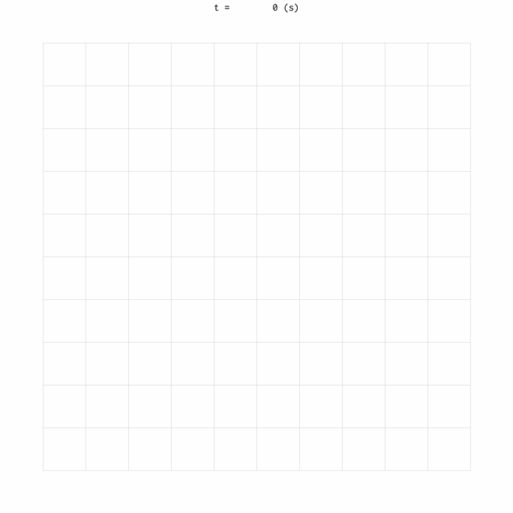
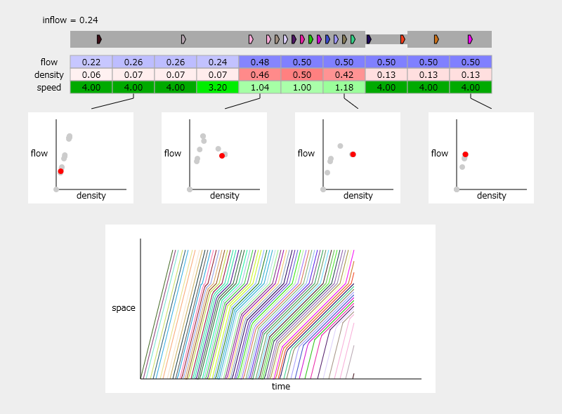
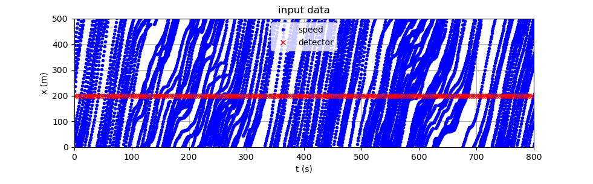
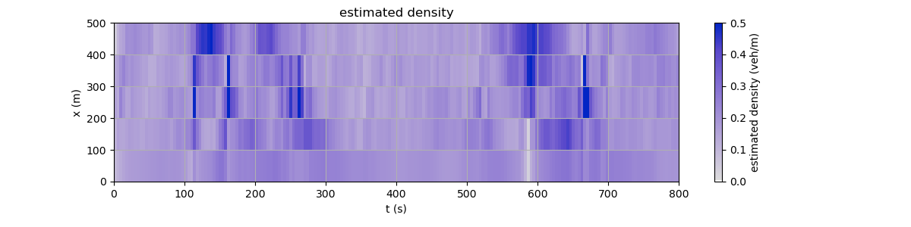

Free software
UNsim
Differentiable traffic simulator based on LTM and Dynamic User Optimum. Enables inverse problems and optimization via gradient methods.
UXsim
Free open-source macroscopic / mesoscopic traffic flow simulator in Python.
Traffic flow demo
Interactive browser-based demo for learning the fundamentals of traffic flow.
FreeTSE
Calibration-free traffic state estimation from detectors and connected vehicle data.
UNsim
Differentiable traffic simulation in Python. It enables lightning-fast simulation and automatic differentiation by leveraging the Link Transmission Model and Dynamic User Optimum.
UXsim
UXsim is a free, open-source macroscopic and mesoscopic network traffic flow simulator developed in Python. It is suitable for simulating large-scale (e.g., city-scale) vehicular transportation. It computes dynamic traffic flow in a network by using traffic flow models commonly utilized by transportation research. UXsim would be especially useful for scientific and educational purposes because of its simple, lightweight, and customizable features; but of course users are free to use UXsim for any purpose.

Demonstration of traffic flow
An interactive demonstration of traffic flow that is useful to learn the fundamentals using a simulator on your web browser. You can learn traffic flow phenomena at a bottleneck, traffic state, flow-density relation, time-space diagram, vehicle trajectory, and cumulative count.

FreeTSE
Calibration-free traffic state estimation method using detectors and connected vehicle data. Easy to use for non-specialists who don't have knowledge of traffic flow theory or programming. It can also be used as a Python module so that you can incorporate it into your own programs.

